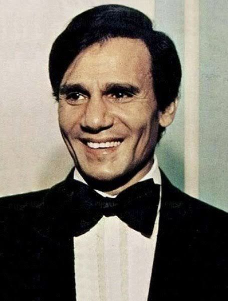
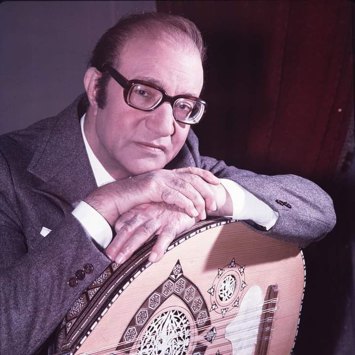

Ancient Egyptian music was an important part of daily life, religion, and celebrations. Music was played in temples to honor the gods, especially during ceremonies dedicated to deities like Osiris and Hathor. Priests and musicians used instruments such as the harp, flute, lute, drum, and the sistrum, a sacred rattle often associated with worship. Music was also present at royal events, banquets, and festivals, where singers and dancers performed for guests. Although we do not know exactly how their music sounded because it was not written in modern musical notation, wall paintings and carvings show that music held a powerful cultural and spiritual role in ancient Egyptian society.
Egypt is always full of artists and here are some of them that inherited the art from their ancestors
| Artist | Popular Song | Publication Year |
|---|---|---|
Umm Kulthum

|
Enta Omry | 1964 |
|
Abdelhalim Hafez  |
Ala hesb wedad | 1966 |
| Shadia | Wehyat Eineik | 1975 |
|
Mohamed Abdelwahab
 |
Men gheir leih | 1989 |
Sherine Abdelwahab

|
Ma shrebtesh men Nilha | 2006 |
Mohamed Mounir
.jpg)
|
Younis | 2008 |
Amr Diab

|
Baba | 2025 |